What is actually training on your GPU right now, and why it exists at all. Companion to the GaussianGPT explainer; no prior knowledge assumed.
The thing on the GPU is not a language model and not a generator. It is a codec: a small network whose only job is to compress a Gaussian object into a short list of integers and decompress that list back into Gaussians, losing as little as possible. The integers are the tokens. The codec defines the alphabet that the generator (Qwen2.5-VL, later) will learn to speak. This document builds that codec up from nothing: first the autoencoder, then why the middle must be discrete, then how you train through a non-differentiable snap, then everything that goes wrong, and finally what your specific 21-object run is for.
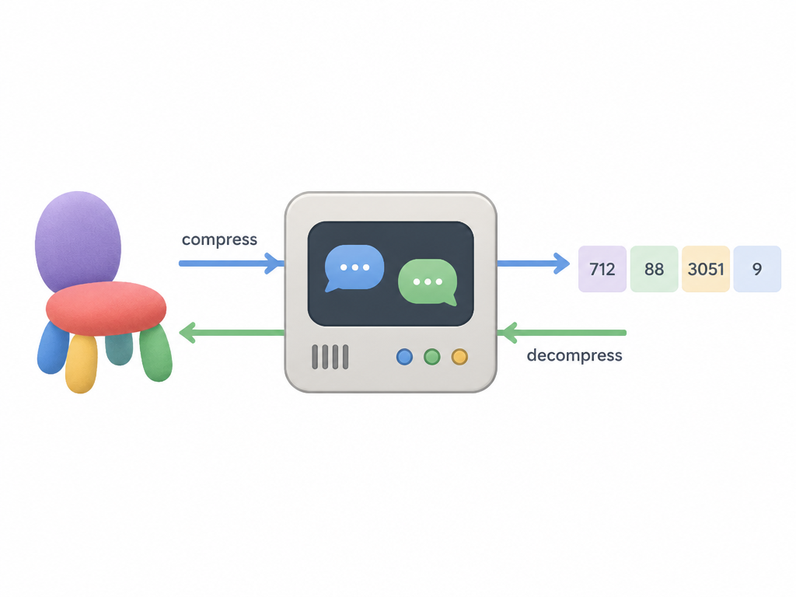
A Vector-Quantized Variational Autoencoder (VQ-VAE) is best understood by its interface, ignoring everything inside:
That is all. It is ffmpeg for Gaussians. Nothing about it generates anything new; given the same object it always produces the same tokens, and given the same tokens it always produces the same reconstruction. The single number that measures its worth is reconstruction fidelity: how close is decode(encode(x)) to x.
Why does anyone want this? Because a transformer that predicts tokens can only ever output things the decoder can build. If the codec is faithful, "generate an object" reduces to "emit a plausible token list", which is precisely the game language models are best at. If the codec is unfaithful, nothing downstream can ever fix it. Hold that thought; it becomes Part 8.
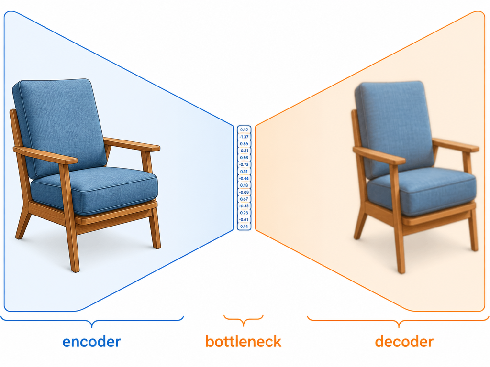
Strip away the "VQ" and the "V" and you have a plain autoencoder, one of the oldest ideas in deep learning. Two networks trained as one:
Train the pair end to end on one loss: make the output match the input. This looks like a pointless identity function until you notice the bottleneck. The latent is far too small to store the input verbatim, so the network cannot cheat by copying. It is forced to discover structure: "this is a chair leg" is a much cheaper thing to remember than ten thousand individual blobs. Compression pressure is the entire teaching mechanism. The narrower the bottleneck, the more abstract the latent must become, and the more detail gets sacrificed. Choosing the bottleneck size is choosing that trade.
In your case the encoder is a sparse 3D convolutional network: it walks over the voxelized Gaussian object, downsamples it a few times, and leaves a coarse grid of latent vectors, one per occupied region. Sparse means empty air costs nothing; convolutional means a chair leg is encoded the same way wherever it stands.
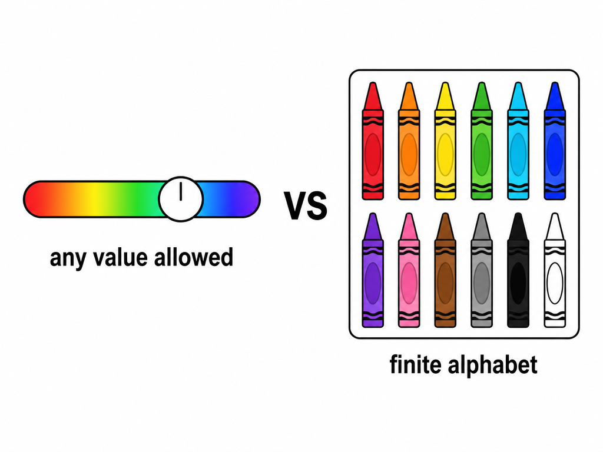
A plain autoencoder's latent is a list of real numbers. Real numbers are a language with an infinite alphabet: between any two values sits another. That is fine if all you want is compression. It is fatal if the plan is to have a transformer generate latents, because next-token prediction needs a finite vocabulary to softmax over. There is no "probability distribution over all real vectors" you can sample from token by token.
(The "variational" autoencoder, the V in the name, fixes a different problem: it makes the continuous latent space smooth and sampleable for diffusion-style models. It still does not give you symbols. The VQ-VAE, despite the inherited name, mostly abandons the variational machinery and keeps the autoencoder plus one new idea.)
The new idea: force the middle of the hourglass to pass through a finite set of allowed values. Replace the infinite gradient slider with a box of crayons.
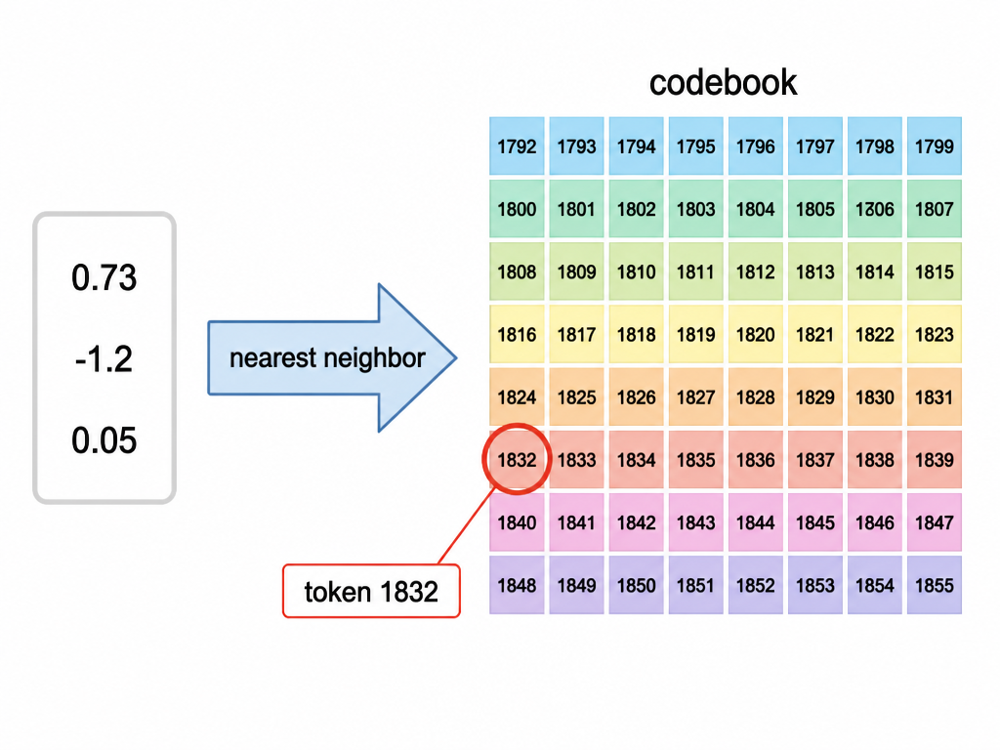
The mechanism is a codebook: a learned table of K reference vectors (K = 4,096 for you), each row a vector the same size as the encoder's output. The forward pass gains one step in the middle:
z for each latent cell.z (plain Euclidean distance).z with that row, and remember only the row's index.The index is the token. The continuous vector never leaves the building; what survives is "cell 17 speaks word 1832". The codebook rows are not hand-designed; they are parameters, learned jointly with everything else, so training itself decides what the 4,096 words of the material-and-shape vocabulary should mean.
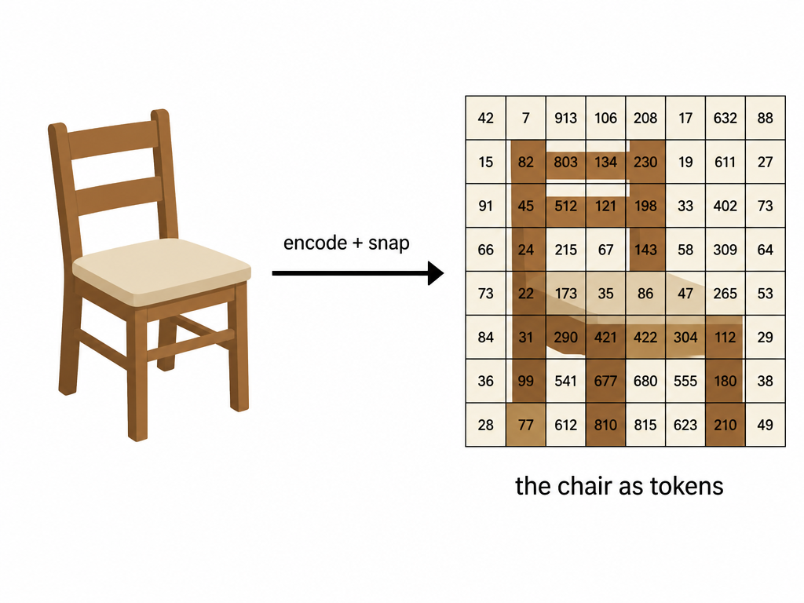
Do this for every occupied latent cell and the object has become a small set of (cell, token) pairs. For your objects that is roughly one to eight thousand tokens, comfortably inside a language model context. This is the exact sense in which the tokenizer builds an "alphabet": the codebook rows are the letters, and the decoder is the reader who knows how to pronounce them back into Gaussians.
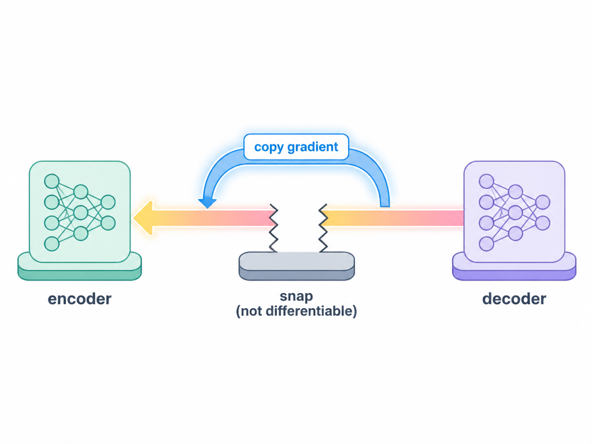
Now the trouble. Training needs gradients to flow from the reconstruction loss, back through the decoder, back through the snap, into the encoder. But "pick the nearest row" is a hard, discontinuous jump: nudge z slightly and the chosen index either stays identical (gradient zero) or teleports to another row (gradient undefined). The snap is a wall; backpropagation dies there, and the encoder would never learn anything.
The fix is almost insultingly simple, and it is the heart of the VQ-VAE paper: the straight-through estimator. On the backward pass, pretend the snap never happened. Copy the gradient that arrives at the snapped vector and paste it directly onto z, as if decoder input and encoder output were the same tensor. The forward pass lies discretely; the backward pass lies continuously; the two lies roughly cancel. It works because the snap is close to the identity function whenever z sits near its chosen codebook row, and the losses in Part 6 actively keep it near.
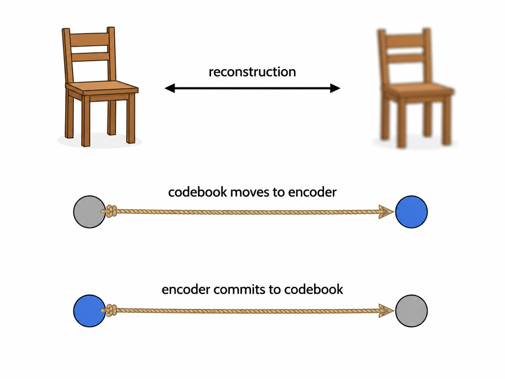
The straight-through trick trains the encoder and decoder, but notice who got skipped: the codebook rows themselves receive no gradient from it. So the full VQ-VAE objective has three parts, each with its own audience:
Rows 2 and 3 are the same distance penalized in opposite directions: the codebook chases the encoder, the encoder commits to the codebook. That mutual pull is what keeps a discrete bottleneck trainable at all.
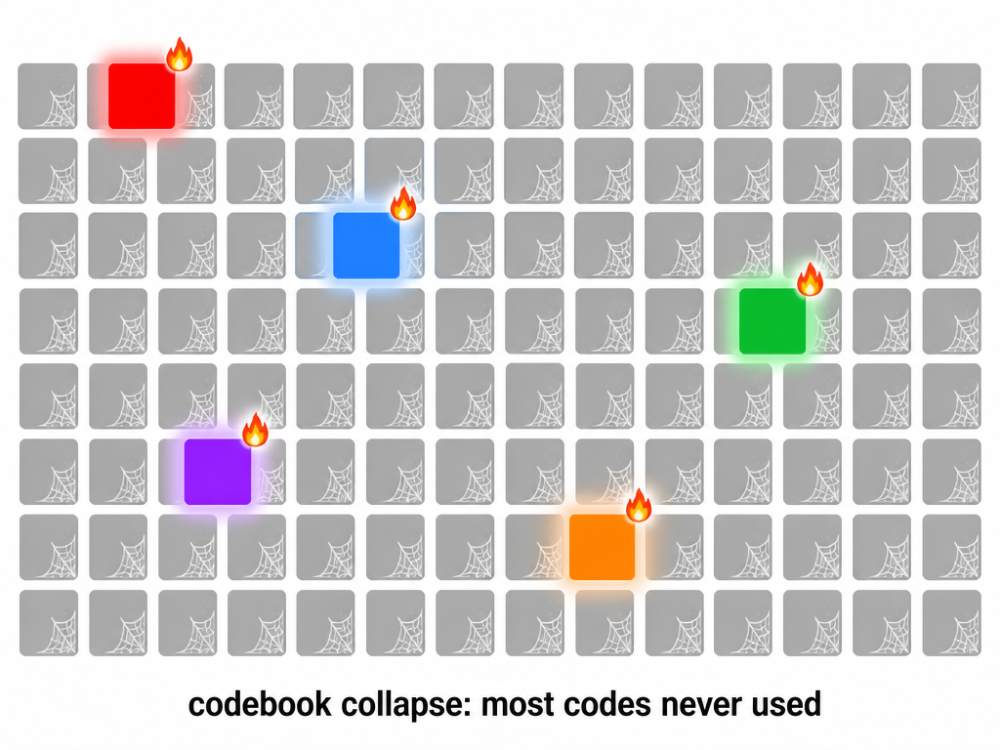
Here is what goes wrong in practice, and it goes wrong often. Early in training, a handful of codebook rows happen to sit closest to the encoder's outputs. They get selected, so they get gradient, so they move toward the data, so they get selected even more. Rows that were never chosen receive no gradient at all and just sit there, dead forever. The rich get richer; the model ends up speaking a 4,096-word language using thirty words. Effective capacity craters and reconstructions turn mushy no matter how long you train.
Standard countermeasures exist (exponential-moving-average codebook updates, randomly restarting dead rows), but the GaussianGPT recipe you are running sidesteps the disease entirely with Lookup-Free Quantization (LFQ):
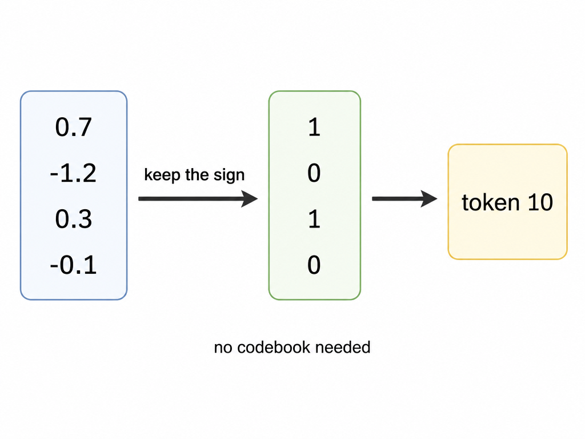
Delete the learned codebook. Have the encoder output a short vector and quantize each dimension to one bit by its sign: positive is 1, negative is 0. Twelve dimensions give a 12-bit string, and that bit string, read as a number, is the token. The "codebook" is now just all 4,096 possible 12-bit patterns; no row can die because no row exists. An entropy loss replaces the codebook loss: it rewards the encoder for spreading its outputs across many different bit patterns (so the whole vocabulary earns its keep) while staying confident about each individual bit. The commitment story simplifies too, since the quantization targets (±1 corners) are fixed rather than moving.
So, pedantically: what you are training is a VQ-VAE in architecture and purpose, with LFQ swapped in as the quantizer. Everything else in this document applies unchanged.
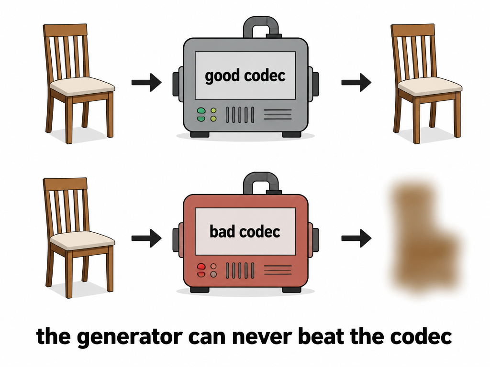
This is the strategic point, and the reason yesterday's blobby watermelon matters. The generator, whether their GPT or your Qwen2.5-VL, outputs tokens. Tokens are meaningless until the frozen decoder turns them into Gaussians. Therefore:
The best object the whole system can ever produce is the best object the decoder can reconstruct. A perfect generator emitting perfect tokens through a bad codec still yields a blob.
Yesterday's probe was exactly this measurement. The released tokenizer was trained on room scenes: its vocabulary learned walls, floors, and furniture-at-a-distance, at scene-appropriate coarseness. Feed it a single close-up object and it must describe the object using words it never learned; the watermelon came back as mush not because anything malfunctioned, but because the alphabet lacked the letters. The authors released the scene codec and the recipe, not the object-level codec. Hence this training run: you are cooking the missing codec yourself, on your own distribution.
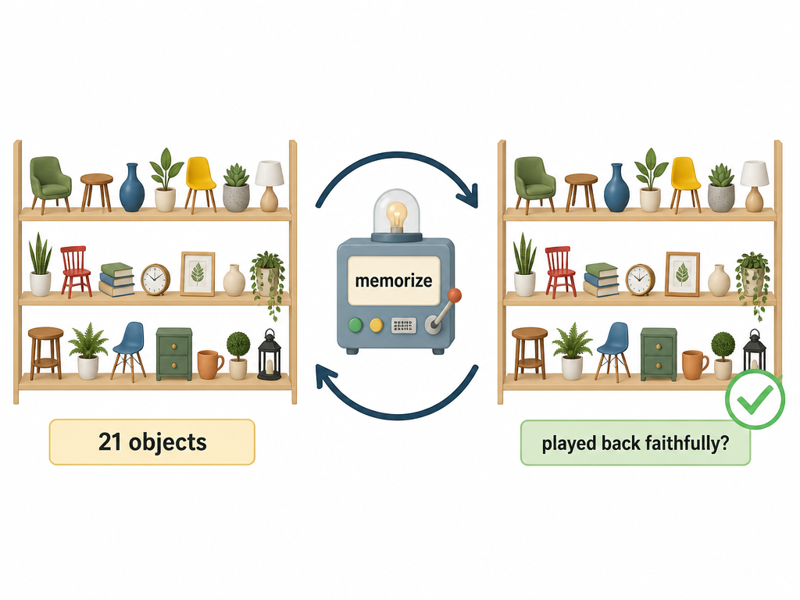
The run in progress is a sanity overfit: 21 TripoSplat objects, the paper's exact hyperparameters, under an hour on one GPU. Overfitting, normally a bug, is the deliberate instrument here. With this few objects and this much model, memorization is guaranteed if the plumbing is right. So the run isolates one narrow question: does the recipe execute end to end on your data, meaning your PLY format parses, your cameras render, your losses go down, and tokens decode back into recognizable objects?
Reading the outcome:
Only after this passes does the real training happen: the same recipe on thousands of objects, where the codec must generalize rather than memorize. That codec gets frozen and becomes the fixed alphabet for stage P3, the LoRA fine-tune that teaches Qwen2.5-VL to emit these tokens from text and images.
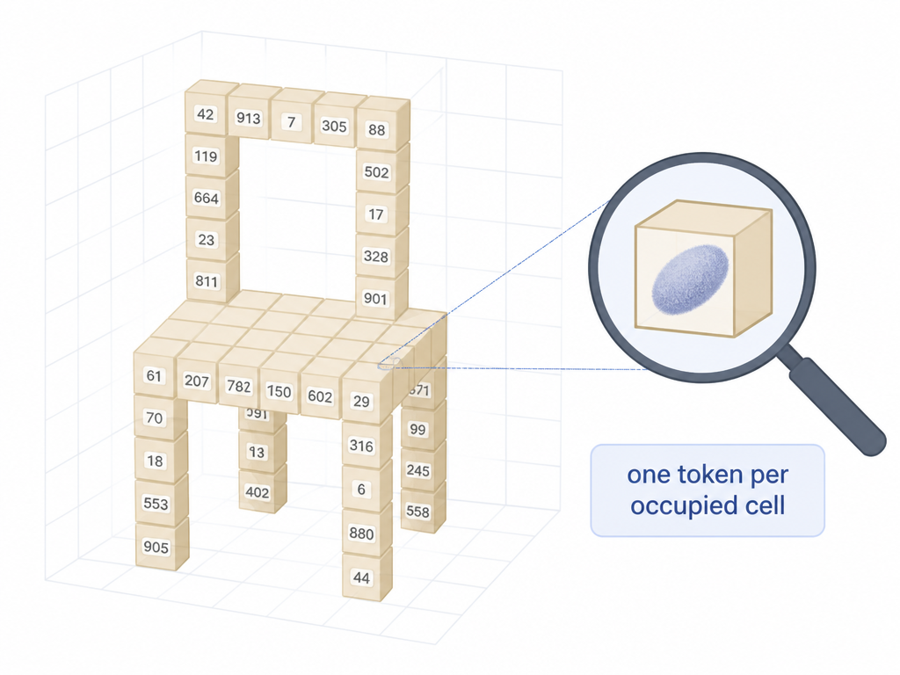
| term | meaning |
|---|---|
| autoencoder | encoder + decoder trained to reproduce their input through a bottleneck |
| latent | the compressed representation in the middle |
| codebook | learned table of K reference vectors; the vocabulary (K = 4,096 here) |
| quantization | replacing a continuous vector with its nearest codebook entry |
| token | the index of that entry; one integer per occupied latent cell |
| straight-through estimator | backprop trick: copy gradients across the non-differentiable snap |
| commitment loss | keeps encoder outputs close to their codes so the trick stays valid |
| codebook collapse | most codes die unused; the classic VQ failure mode |
| LFQ | codebook-free quantization by sign bits; used in your recipe |
| entropy loss | LFQ's replacement for codebook learning; forces wide vocabulary use |
| tokenizer ceiling | downstream generation can never exceed codec reconstruction quality |
One line to keep: the VQ-VAE is a codec, its codebook is an alphabet, and this run only checks that the printing press turns on.